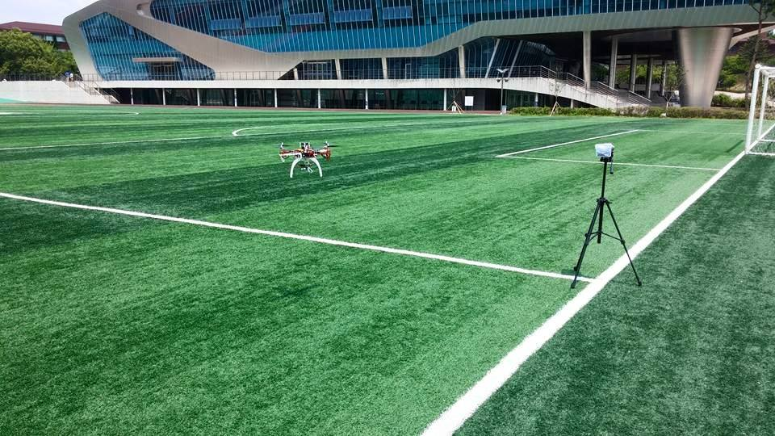
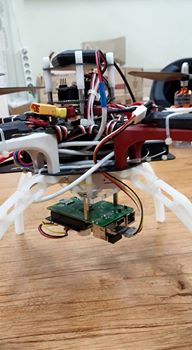
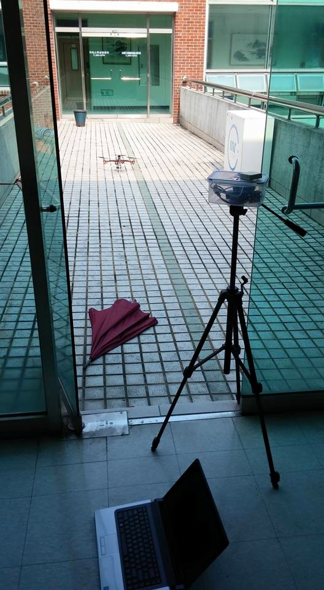
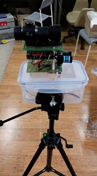
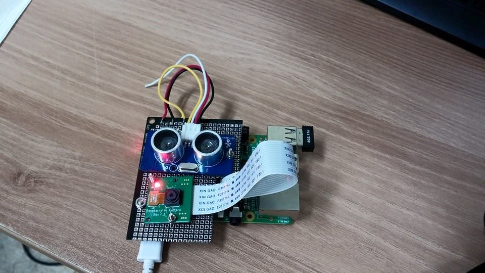

드론의 사용이 늘어나면서 도심 지역 등 건물 근처에서 드론을 비행시키는 경우가 많고 이로 인해 GPS 신호가 들어오지 않거나 왜곡되는 곳에서 GPS를 보정할 항법장치가 필요해진다. 레이저 지시기와 드론 하단에 부착된 카메라의 영상처리를 이용하여 호버링 중인 드론의 정확한 위치를 계산하고 Kalman Filter를 이용하여 GPS를 보정하는 연구를 진행하였다.